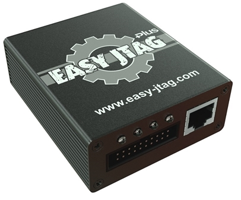

| Overview |
|---|
The EasyJtag it's hardware and software complex which intended for the automated restoration of firmware of mobile phones, smartphones, tablets and other electronic devices, hereinafter referred to as devices using the JTAG interface and/or eMMC memory chips.
Надо переписать и дополнить
The hardware is represented by two solutions. It's EasyJtag box and EasyJtagPlus box.
EasyJTAG box is first generation box which support:
Добавить картинку первого бокса
EasyJTAG Plus box is second generation box which support:
|  |
|---|
|
EasyJTAG Plus box |
Короткое описание возможностей софта с списком интерфейсов и силками на их разделы.
Скрин главного экрана<-body->